전자상거래운용사 (2009-04-18 기출문제)
1과목: 인터넷 일반
1. 다음 중 그래픽 파일 포맷에 대한 설명으로 옳지 않은 것은?
- GIF 파일 포맷으로 애니메이션을 생성할 수 있다.
- GIF 형식의 파일은 8비트, 16비트, 24비트 컬러를 다양하게 표현한다.
- PNG 형식의 파일은 투명색을 갖는 이미지를 생성할 수 있다.
- GIF 형식의 파일은 투명색을 갖는 이미지를 생성 할 수 있다.
(정답률: 알수없음)

2. 다음 중 프로그램에서 여러 가지 종류의 데이터베이스를 연결하여 사용할 수 있게 하는 것은?
- ODBC
- TCP/IP
- RPC
- Small Talk
(정답률: 82%)
3. 다음 중 청와대 홈페이지 주소를 가장 바르게 유추한 것은?
- www.bluehouse.go.kr
- www.bluehouse.ac.kr
- www.bluehouse.co.kr
- www.bluehouse.re.kr
(정답률: 알수없음)
4. 다음 중 브라우저를 처음 실행시킨 후부터 종료 전까지 사용자가 방문했던 웹 사이트 주소들을 순서대로 기억시켜 두어 보관하는 기능은?
- 북마크(bookmark) 기능
- 캐쉬(cache) 기능
- 캡춰(capture) 기능
- 히스토리(history) 기능
(정답률: 62%)
5. 다음 중 키워드 검색의 효율성을 높이기 위한 방법으로 가장 적절하지 않은 것은?
- 주제별 카타로그를 선택하여 범위를 최소화한 다음, 그 범주 내에서 키워드 검색을 수행한다.
- 검색 도움말, 확장 검색 등의 메뉴를 참고하여 정교환 검색 식을 사용한다.
- 키워드의 동의어/유의어를 다양한 질의어로 이용한다.
- 자연어 질의를 주로 사용한다.
(정답률: 알수없음)
6. 다음 중 전자우편을 받는 사람에게는 보이지 않게 하면서 동일한 내용을 여러 사람들이 참조 가능하도록 하려고 할 때 사용되는 전자우편의 헤더 부분은?
- BCC
- Cc
- Received
- Status
(정답률: 알수없음)
7. 다음 중 ASP의 request 객체에서 지원되는 컬렉션이 아닌 것은?
- Form
- Querystring
- Cookies
- Client
(정답률: 알수없음)
8. 다음 중 Flash 프로그램으로 만드는 동적인 웹페이지를 제작할 수 있는 애니메이션 파일의 확장자는?
- GIF
- JPG
- SWF
(정답률: 알수없음)
9. 다음 중 HTML의 입력 양식(form)에 대한 설명으로 가장 거리가 먼 것은?
- 웹 서버로 전송할 데이터를 입력받을 때 사용하는 것이다.
- 웹 서버로 데이터를 전송하는 방식에는 POST와 GET이 있다.
- 입력 양식을 만들기 위해서는 ＜FORM＞...＜/FORM＞ 태그를 사용한다.
- 입력 양식을 만들기 위해서는 별도의 특별한 언어를 사용해야 한다.
(정답률: 알수없음)
10. 다음 중 클라이언트 스크립트 언어에 대한 특징을 잘못 설명한 것은?
- 스크립트 언어는 한 줄씩 읽어서 실행되는 언어이다.
- 스크립트 언어로 작성한 프로그램은 실행 파일로 변환시켜 실행한다.
- 자바스크립트는 변수 선언시 데이터형을 지정하지 않는다.
- 스크립트 언어는 일반적으로 소스가 노출되어 보안이 어렵다.
(정답률: 알수없음)
11. 다음 중 검색엔진을 통해 효율적으로 검색하는 방법과 가장 거리가 먼 것은?
- 키워드 하나만을 사용하여 검색한다.
- 검색연산자를 사용하여 검색한다.
- 여러 검색엔진을 통해 원하는 문서를 검색한다.
- 검색결과가 너무 많은 경우 결과 내에서 다른 키워드를 사용하여 재검색한다.
(정답률: 알수없음)
12. 다음 설명과 관계가 있는 것은?
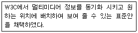
- SGML
- SMIL
- XHTML
- SMTP
(정답률: 알수없음)
13. 다음과 같은 형식으로 HTML 문서를 작성 할 때 ( )안에 들어갈 속성값을 순서대로 나열한 것은?
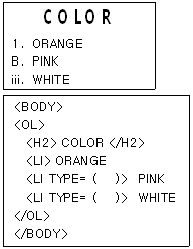
- A, i
- I, a
- a, I
- i, A
(정답률: 82%)
14. ＜FORM＞태그 내에서 사용되는 ＜INPUT＞태그는 사용자로부터 다양한 방식으로 입력을 받을 수 있는데 이때 Type 속성을 사용한다. 다음 중 Type 속성으로 사용할 수 없는 것은?
- METHOD
- RESET
- PASSWORD
- TEXT
(정답률: 60%)
15. 다음이 설명하는 것은?
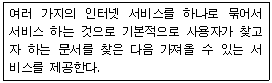
- 아치(Archie)
- 텔넷(Telnet)
- 고퍼(Gopher)
- IRC(Internet Relay Chat)
(정답률: 알수없음)
16. 다음 중 프로그램보호법의 제정목적과 가장 거리가 먼 것은?
- 컴퓨터 프로그램을 저작물로 인정하고, 일반저작권자와 같은 권리를 보호한다.
- 창작된 프로그램의 공정한 이용과 유통 및 활용을 촉진한다.
- 새로운 프로그램의 창작을 유도하여 프로그램 산업과 기술을 진흥한다.
- 외국인의 프로그램을 적절히 보호하는 동시에 사용을 제한한다.
(정답률: 알수없음)
17. 다음 중 JSP(Java Server Page)에 대한 설명으로 가장 거리가 먼 것은?
- 서블릿으로 컴파일되어 실행된다.
- 자바 스크립트처럼 클라이언트에서 실행된다.
- 스레드 방식으로 하나의 프로세스내에 여러 스레드가 생성되어 서비스를 제공한다.
- 동적 컨텐츠를 생성할 수 있도록 지원하며, 사용자와 양방향 작용을 가능하게 한다.
(정답률: 알수없음)
18. 프레임을 다음과 같은 모양으로 나누려고 한다. 다음 중 바르게 작성된 것은?
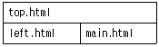
- ＜FRAMESET rows="100.*"＞
＜FRAME SRC="./top.html"＞
＜FRAME SRC="./left.html"＞
＜FRAME SRC="./main.html"＞
＜/FRAMESET＞ - ＜FRAMESET cols="100.*"＞
＜FRAME src="./top.html"＞
＜FRAME src="./left.html"＞
＜FRAME src="./main.html"＞
＜/FRAMESET＞ - ＜FRAMESET rows="100.*"＞
＜FRAME src="./top.html"＞
＜FRAMESET cols="200.*"＞
＜FRAME src="./left.html"＞
＜FRAME src="./main.html"＞
＜/FRAMESET＞
＜/FRAMESET＞ - ＜FRAMESET cols="100.*"＞
＜FRAME src="./top.html"＞
＜FRAMESET rows="200.*"＞
＜FRAME src="./left.html"＞
＜FRAME src="./main.html"＞
＜/FRAMESET＞
＜/FRAMESET＞
(정답률: 알수없음)
19. 다음 중 정보화 사회에 있어 올바른 윤리관과 가장 거리가 먼 것은?
- 법과 질서를 준수하고 타인의 사생활을 함부로 침해하지 않도록 한다.
- 소프트웨어를 무단으로 복제해서 사용하지 않도록 한다.
- 업무상 취득한 정보는 선별하여 일부는 사적인 목적으로 사용할 수 있다.
- 통신망에서 근거 없는 유언비어나 음란물을 유포하지 않도록 한다.
(정답률: 91%)
20. 다음은 인터넷을 사용하는 개인이 지켜야 할 네티즌의 기본 정신에 대한 설명이다. 가장 바르지 못한 것은?
- 사이버 공간의 주체는 인간이다.
- 사이버 공간은 공동체의 공간이다.
- 사이버 공간은 누구에게나 평등하며 열린 공간이다.
- 사이버 공간은 네티즌간에 서로 감시하여 평등하게 가꾸어 나간다.
(정답률: 80%)
2과목: 전자상거래 일반
21. 다음은 무엇을 설명한 것인가?
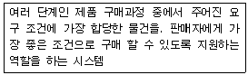
- POS 데이터 분석 시스템
- e-CRM 시스템
- 비교 구매 시스템
- ASP(Application Service Provider)
(정답률: 알수없음)
22. 다음 중 인터넷 소비자에 대한 설명으로 가장 거리가 먼 것은?
- 오프라인에서와 마찬가지로 온라인에서도 소비자들은 소비에 대한 뚜렷한 욕구가 있어야만 웹사이트들을 방문한다.
- 인터넷 사용자들은 처음에는 여러 웹사이트를 서핑하면서 정보를 수집하지만 차츰 몇 개의 유용한 사이트를 집중적으로 이용하는 경향이 있다.
- 인터넷에서는 정보탐색과정을 쇼핑 에이전트나 로봇이 대신해 주기 때문에 오프라인 구매보다 정보탐색의 단계가 단순화될 수 있다.
- 인터넷을 통해 정보를 탐색한 소비자는 구매를 인터넷에서도 할 수 있고 오프라인의 상점에서 할 수도 있다.
(정답률: 알수없음)
23. 다음 중 전자상거래에서 백오피스의 관리대상으로 볼 수 없는 것은?
- 고객정보관리
- 전자주문처리
- 전자결제관리
- 컨텐츠 관리
(정답률: 알수없음)
24. 다음 중 인터넷 광고의 특성을 바르게 설명한 것은?
- 소비자 동향의 추적이 어렵다.
- 단방향 정보를 제공 한다.
- 주로 텍스트 중심의 문서를 통하여 표현 한다.
- 광고에 노출되는 대상을 식별.통제할 수 있으며, 고객맞춤형 광고가 가능하다.
(정답률: 알수없음)
25. 다음에서 인터넷 비즈니스 모델의 구성요소(3C)를 모두 고른 것은?
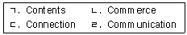
- ㄱ, ㄴ
- ㄱ, ㄷ
- ㄴ, ㄷ
- ㄷ, ㄹ
(정답률: 70%)
26. 다음 중 로그 파일을 통해 얻을 수 있는 정보로서 가장 적절치 않은 것은?
- 방문자의 사이트 만족도
- 콘텐츠별 방문 빈도 및 체류시간
- 방문자의 접속 도메인과 시간대 및 요일
- 방문자의 방문경로
(정답률: 60%)
27. 다음 중 인터넷 마케팅에서 효과적인 시장세분화의 판단기준으로 가장 거리가 먼 것은?
- 각 세분시장의 수익 및 성장의 잠재력
- 세분시장내 고객욕구의 다양성 정도
- 세분시장간 욕구의 상이성 정도
- 세분시장에 대한 접근가능성 정도
(정답률: 알수없음)
28. 다음 중 기업이 인터넷을 이용하여 법인세나 취득세를 납부한다면 어떤 유형의 전자상거래로 볼 수 있는가?
- Business-to-Business(B-to-B)
- Government-to-Government(G-to-G)
- Government-to-Business(G-to-B)
- Business-to-Consumer(B-to-C)
(정답률: 70%)
29. 다음 중 공동배송을 바르게 설명한 것은?
- 상품 특성의 유사성이 있을 때 효과가 높다.
- 제품의 부피와 무게가 작을 때 효과가 높다.
- 물류의 비용은 절감할 수 있으나, 물류의 효율성이 떨어진다.
- 여러 지역에 분산되어있는 동일업종이 사용할 때 효율적인 배송방법이다.
(정답률: 알수없음)
30. 다음은 전화를 통한 고객 관리와 관련된 기술에 대한 설명이다. 이 설명에 해당하는 기술은?
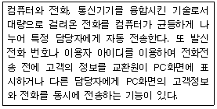
- CTI (Computer Telephony Integration)
- ARS (Automatic Response System)
- PBX (Private Branch Exchange)
- VMS (Voice Mail Service)
(정답률: 60%)
31. 다음 중 온라인 거래의 결제 수단으로 신용카드형의 전자 화폐가 많이 사용되어지고 있는 이유로서 가장 타당하지 않은 것은?
- 전자화폐의 안정성을 신용카드회사가 보장해 준다.
- 신용카드의 사용은 법적, 제도적으로 구속을 받지 않는다.
- 온라인 거래 시 구매자의 지불능력 때문에 신용카드로 결제가 될 경우에도 실시간 거래는 불가능 하다.
- 신용카드 가맹점이 전 세계적으로 확산되어 있다.
(정답률: 80%)
32. 다음 중 인터넷을 이용한 상거래의 효과로 볼 수 없는 것은?
- 구매자와 판매자가 서로를 찾아 어떤 재화나 서비스를 거래하는 자유롭고 개방된 시장이므로 고객과 별도의 커뮤니케이션이 필요 없다.
- 구매자에게는 제품과 서비스에 대해 많은 디지털정보가 제공된다.
- 인터넷은 풍부한 정보와 손쉬운 연결로, 구매자와 판매자간에 적정가격에 동의하는 이론적으로 완전한 가격(Perfect price)에 도달하게 해준다.
- 판매자는 고객의 취향과 구매 유형에 대한 보다 많은 정보를 획득할 수 있다.
(정답률: 알수없음)
33. 컴퓨터와 인터넷을 기반으로 한 디지털 기술의 활용을 통해 생산, 소비, 유통 등 제반 경제활동이 근본적으로 바뀌게 된 경제체제인 이른바 디지털 경제에 대한 설명으로 바르지 않은 것은?
- 수확체증의 법칙이 적용되고, 한계비용이 증가한다.
- 경제의 글로벌화가 진행된다.
- 지식, 정보 등이 핵심적인 생산요소로 등장한다.
- 컨텐츠, 정보통신 관련산업이 핵심산업화 된다.
(정답률: 60%)
34. 전자 상거래에서 구매를 지원하는 프로세스는 다양하다. 다음이 설명하는 것은 무엇인가?
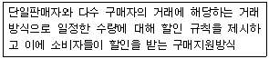
- 비교 구매
- 경매
- 공동 구매
- 역 경매
(정답률: 알수없음)
35. 다음이 설명하는 마케팅기법은?
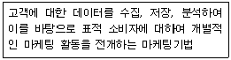
- 데이터베이스(database) 마케팅
- 집중화 마케팅
- 애프터(after) 마케팅
- 차별화 마케팅
(정답률: 70%)
36. 다음 중 e-비즈니스로 인해 나타나는 장점으로 보기 어려운 것은?
- 운영비용의 절감
- 보다 많은 고객 정보의 파악을 통한 고객서비스 향상이 가능
- 지역적, 시간적 한계의 극복을 통한 시장범위의 확대
- 고객의 전환비용(switching cost) 증대
(정답률: 59%)
37. 다음 중 전통적상거래와 전자상거래를 비교한 내용중 가장 거리가 먼 것은?
- 거래 대상에서 전통적 상거래는 일부 지역에 한정하나 전자상거래는 전 세계가 판매대상이다.
- 기업 경쟁력 측면에서 전통적 상거래는 지식, 아이디어가 경쟁력의 중요 요소였으나, 전자상거래는 물리적 형태의 투입요소 규모가 중요하다.
- 고객대응에서 전통적상거래는 고객 요구 파악 및 고객 불만 댕응이 지연되었으나, 전자상거래는 신속한 고객 욕구 파악 및 고객 불만에 신속 대응이 가능하다.
- 마케팅 활용측면에서 전통적상거래는 구매자의 의사에 관계없는 일방적인 마케팅 활동이고, 전자상거래는 쌍방향 통신을 위한 일대일 마케팅을 추구한다.
(정답률: 80%)
38. 다음 중 전자상거래로 인한 물류의 특성으로 가장 적합하지 않은 것은?
- 물류센터에서 유통점을 거치지 않고 소비자에게 직접 배달
- 배송시간의 단축화
- 물류영역에 있어서 최종 배송점의 제한 및 집중화
- 소비자의 배송시간 선택 가능
(정답률: 알수없음)
39. 다음에서 설명하고 있는 물류관리 영역을 제조업체의 관점에서 가장 적절하게 설명한 것은?
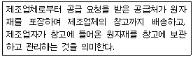
- 생산 물류
- 조달 물류
- 배송 물류
- 사이버(가상) 물류
(정답률: 알수없음)
40. 전자상거래를 위해 필요한 물품을 구매하는 단계에서 구매상황은 신규구매, 수정 재구매, 단순 재구매로 분류할 수 있다. 다음 중 단순 재구매에서만 필요한 구매 단계를 나열한 것은?
- 문제의 인식, 제품명세서 작성
- 제품명세서 작성, 실적평가
- 공급업자 탐색, 공급업자 선택
- 공급업자 선택, 주문명세서 작성
(정답률: 알수없음)
3과목: 컴퓨터 및 통신 일반
41. 웹사이트를 구성하는 웹 브라우저 구성 프로그램 중 다른 세 가지와 성격이 다른 것은?
- PHP
- SQL
- JSP
- ASP
(정답률: 알수없음)
42. 다음 중 입력장치로 옳지 않은 것은?
- 스캐너
- 태블릿
- 바코드 판독기
- 플라즈마
(정답률: 알수없음)
43. 다음 중 머천트 서버(Merchant Server)의 기본 구성요소라 볼 수 없는 것은?
- 카탈로그 관리 프로그램
- 전자메일 전송 프로그램
- 고객 정보 관리 프로그램
- 결제처리 프로그램
(정답률: 알수없음)
44. 다음 중 인터넷보안체계에서 외부위협고 이에대한 대처방안이 올바로 짝 지워진 것은?
- 자동화된 공격 툴 - 중요한 문서를 삭제한다.
- 패스워드 공격 - 강력한 인증방안 제시
- 바이러스 - 전자우편 프로그램을 웹 메일로 대치
- 서비스 거부 공격 - 상대방에 대한 재공격을 수행
(정답률: 알수없음)
45. 다음이 설명하는 것은 무엇인가?
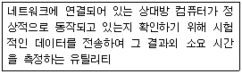
- winipcfg
- trace
- ping
- finger
(정답률: 73%)
46. 다음 중 SHTTP(Secure Hypertext Transfer Protocol), SSL(Secure Sockets Layer)과 가장 관련이 깊은 것은?
- 전자서명 프로토콜
- 전자지불 프로토콜
- 인터넷 보안 프로토콜
- 소액거래 지원 프로토콜
(정답률: 55%)
47. 다음 중 TCP/IP 프로토콜에 해당되지 않는 계층은?
- Application 계층
- Network Access 계층
- Internet 계층
- FTP 계층
(정답률: 알수없음)
48. 다음 중 클라이언트 - 서버에 관한 설명으로 가장 적절하지 않은 것은?
- 클라이언트는 연산 처리 능력과 저장 장치의 크기가 서버에 비해 크고 빠른 네트워크 환경을 갖춘 시스템에서 동작한다.
- 클라이언트 - 서버의 가장 대표적인 예는 웹브라우저와 웹 서버이다.
- 클라이언트는 서버 컴퓨터나 네트워크로 연결된 다른 컴퓨터로서 서버에게 연결을 요청하고 연결이 이루어지면 서버에 서비스를 요청한다.
- 서버는 클라이언트로부터 요청 받은 여러 가지 서비스에 응답을 한다.
(정답률: 59%)
49. 다음이 설명하는 것은?
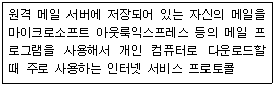
- TELNET
- HTTP
- POP3
- FTP
(정답률: 알수없음)
50. 다음 중 바이러스의 종류에 대한 설명으로 가장 옳지 않은 것은?
- 파일 바이러스란 실행 가능한 프로그램에 감염되는 바이러스를 말한다.
- 매크로 바이러스란 UNIX운영체제에서 매크로 사용을 통해 감염되는 형태이다.
- 웜 바이러스는 이메일이나 뉴스그룹을 통해 자신을 복제, 전파하는 악성프로그램이다.
- 트로이안(Trojan) 바이러스는 자기 복제 기능도 없고 다른 파일에 달라붙지도 않지만 정보유출이나 시스템에 문제를 발생시키는 역할을 한다.
(정답률: 55%)
51. 다음 중 인터넷 서비스와 관련된 프로토콜로 가장 거리가 먼 것은?
- FTP
- SMTP
- Gopher
- NetBios
(정답률: 알수없음)
52. 다음 중 통신기기에 대한 설명으로 가장 적절하지 않은 것은?
- 라우터(router) : 동일한 프로토콜을 사용하는 서로 다른 네트워크를 연결하는 장치로 여러 경로중 가장 효율적인 경로를 선택하는 기능을 갖는다.
- 랜카드(lan card) : NIC(Network Interface Card)라고 하며 컴퓨터와 네트워크를 연결하는 인터페이스 역할을 담당한다.
- 허브(hub) : 스타형 토폴로지 네트워크의 중심 역할을 하는 장치를 가리키며, 능동형(active) 허브와 수동형(passive) 허브로 구분된다.
- 먹스(mux) : 네트워크 관리 장비로 네트워크에 트래픽이 가중되어 교착상태가 되는 현상을 방지해준다.
(정답률: 알수없음)
53. 다음 중 디지털 가입자 회선인 DSL의 전송속도를 빠른 것부터 느린 것까지 순서대로 올바르게 나열한 것은?
- HSDL - IDSL - ADSL - VDSL
- IDSL - ADSL - HDSL - VDSL
- VDSL - ADSL - HDSL - IDSL
- VDSL - IDSL - ADSL - HDSL
(정답률: 91%)
54. 다음은 어떤 통신망에 대한 설명인가?
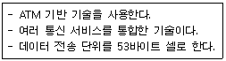
- ISDN
- B-ISDN
- VXDL
- IMT2000
(정답률: 알수없음)
55. 다음 중 FTP 서버에 관한 설명으로 가장 올바른 것은?
- FTP 서비스는 File Transfer Protocol의 약자로서 인터넷에서 파일을 주고받을 수 있다.
- FTP 사이트에 접속하려면 ID와 패스워드가 반드시 필요하다.
- FTP 서버는 대용량 파일의 전송과 보관이 불편하다.
- FTP는 주로 HTML 파일을 전송하는데 사용된다.
(정답률: 알수없음)
56. 다음 문장의 (가), (나)에 들어갈 가장 적합한 것은?
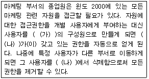
- (가) : 생산 부서, (나) : 부서
- (가) : 생산 그룹, (나) : 그룹
- (가) : 마케팅 부서, (나) : 부서
- (가) : 마케팅 그룹, (나) : 그룹
(정답률: 알수없음)
57. 다음 중 URL 형식이 다음과 같은 때 기본 포트번호가 21번인 프로토콜은?
- http
- ftp
- telnet
- gopher
(정답률: 알수없음)
58. 다음 중 인터넷의 개념에 대한 설명으로 가장 거리가 먼 것은?
- 파일전송, 전자우편, 원격접속, 웹 등의 다양한 서비스를 제공한다.
- 전 세계 네트워크를 하나로 묶은 망이다.
- TCP/IP라는 통일된 프로토콜이 개발되면서 확산되었다.
- NCP 프로토콜은 다양한 통신망의 특성을 지원하기에 가장 적합한 프로토콜이다.
(정답률: 80%)
59. 다음 중 중앙처리장치와 관련한 설명으로 가장 거리가 먼 것은?
- 일반적으로 병렬처리컴퓨터는 직렬처리컴퓨터보다 데이터 처리 속도가 느리다.
- 레지스터는 중앙처리장치 내에 위치하는 고속의 기억장소이다.
- 중앙처리장치의 클럭주파수가 높으면 처리속도가 빠르다.
- 소수점이 있는 산술연산이 많은 경우 속도증가를 위해 보조처리기가 필요하다.
(정답률: 70%)
60. 다음 중 애플리케이션 소프트웨어를 웹에 띄워 일정비용만 내고 빌려쓸 수 있도록 하는 일종의 애플리케이션 아웃소싱을 일컫는 용어로 가장 적절한 것은?
- ASP (Active Server Page)
- ASP (Application Service Provider)
- ERP (Enterprise Resource Planning)
- SI (Systems Integration)
(정답률: 알수없음)